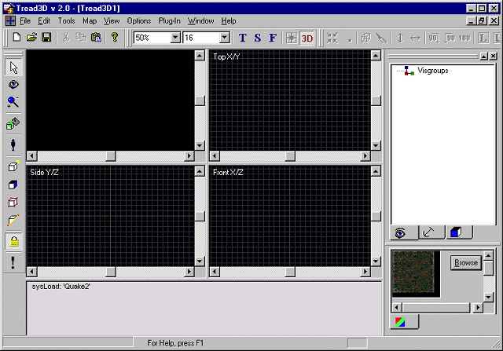
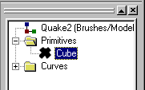
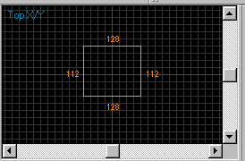
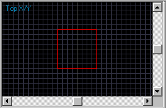
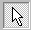
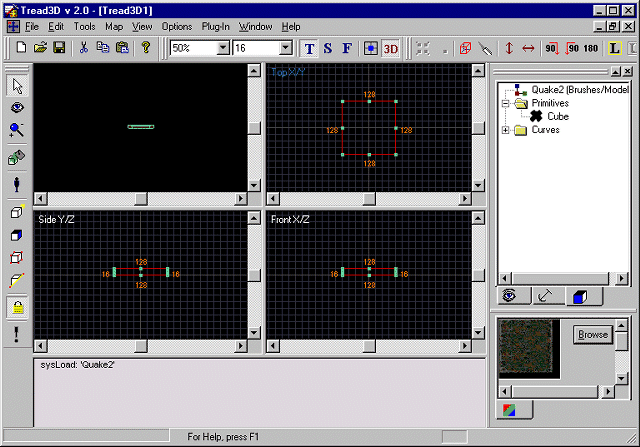
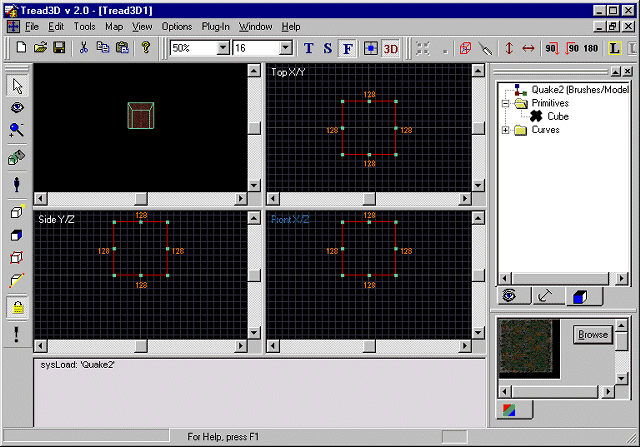

|
|
|---|
This is a walk-through as to how to make a brush.
Before starting this tutorial you should first get acquainted with the basics of the "Tread3D" editor; the screen and the various commands that are available.
Start "Tread3D" and select a game to edit; in this case choose Quake2.
Your screen should look like the one below.

Now click on the "Brush Creation" button.
You will notice that the information in the "Object Workspace" has changed.
The "Object Workspace" should look like the one below.

The information is now a directory of all brushes/models for Quake2. Open up the "Primitives" folder and click on "Cube".
Now go to the "Editor Workspace" and in this case we will work in the "TopX/Y" view first.
Place the "cross-hairs" over a point where you want one corner of the "Cube" to be.
Now click and drag the box to the opposite corner of where you want the "Cube" to be.
(This will set the overall size of the "Brush")
As you are making the outline box you will notice the dimensions of the box are displayed.
As you are outlining the box your TopX/Y View should look like the one below.

Once you have the outlining box the size you want just let go of the mouse button.
Your TopX/Y View should look like this.

Now click on the "Pointer" button.

You will notice that the brush now has dimensions as well as "handles" in the corners and middle points of each line.
Your screen should look like the one below.

Now lets adjust the height of the brush.
Just point the "Pointer" at the middle handle on the top or bottom line in the "FrontX/Y" view.
Click the hold the mouse button while you drag the pointer to the height desired.
Your screen should look like the one below.

Thats all there is to it.
What you have done is create your first "Brush".
You will notice that we did not change/manipulate the textures as that is the subject of another tutorial.